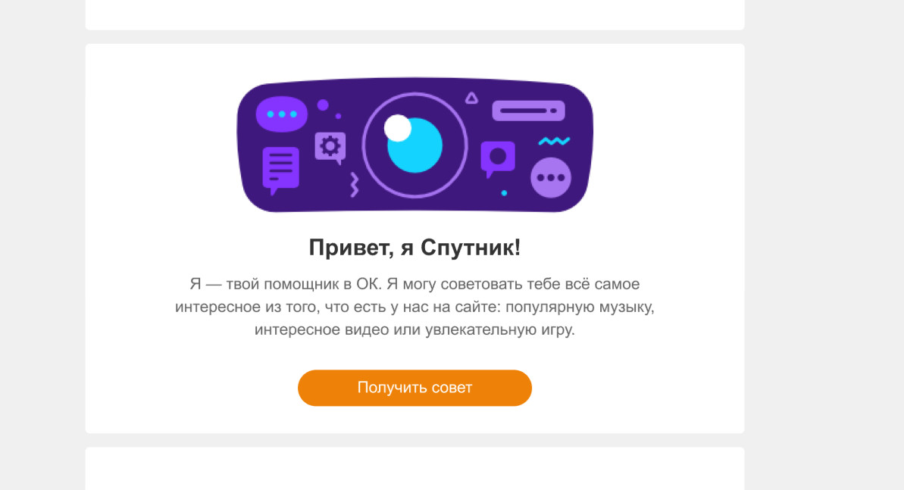
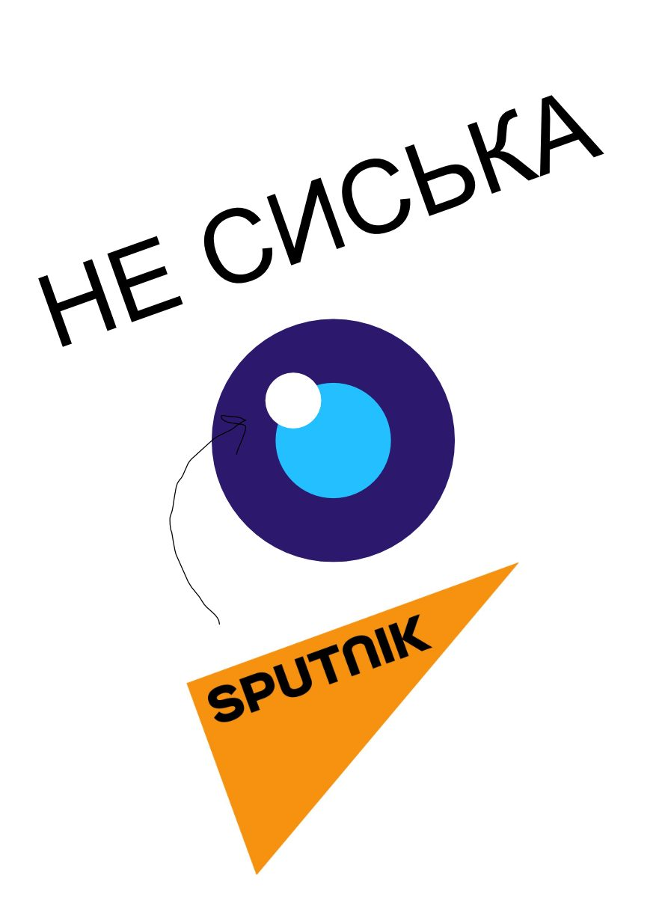
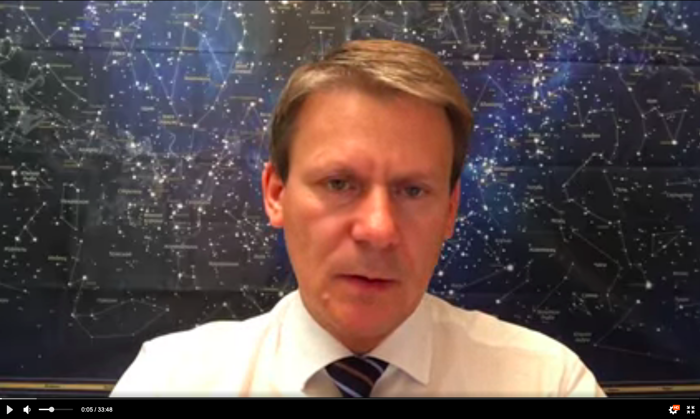
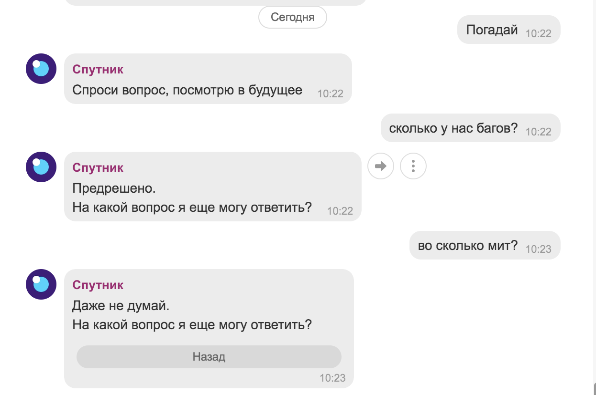

Чат-бот, который в 2019 году - ещё до вакцины - объяснял новичкам ОК, как устроена соцсеть, и играл с ними в гороскопы.
Одноклассники - социальная сеть с историей, но большое число пользователей не всегда понимает и знает весь функционал портала. Вместе с продуктовой командой «Новые пользователи» и дизайнерами я разработал UX чат-бота. В одной из своих итераций он был назван «Спутником» - в 2019 году, до вакцины, но после портала.

Изначально я писал тексты для бота, которого мы собрали из существующих инструментов: он приветствовал пользователя, рассказывал об особенностях социальной сети, а затем играл с ним в викторины и квизы. Это решало две задачи: объяснить функционал, который не понимают пользователи, и увеличить показатели удержания - конверсию новичков в постоянных пользователей (заход на сайт хотя бы раз в месяц).

Мы подключали функции, селективно выбирая самые популярные развлекательные сценарии бота, чтобы понять, какое направление самое функциональное. Признанным лидером стали гороскопы.

Вместе с командой PR нам удалось привлечь внешнего астролога-блогера для создания коротких видеороликов для пуша по аудитории новичков - чтобы привлечь их писать комментарии в ОК.

Бот «Спутник» покрывал порядка 100 тысяч пользователей каждый день. На следующей итерации разработки часть функций бота «Спутника» Одноклассников перешли в «Марусю» - голосового ассистента Mail.ru Group.